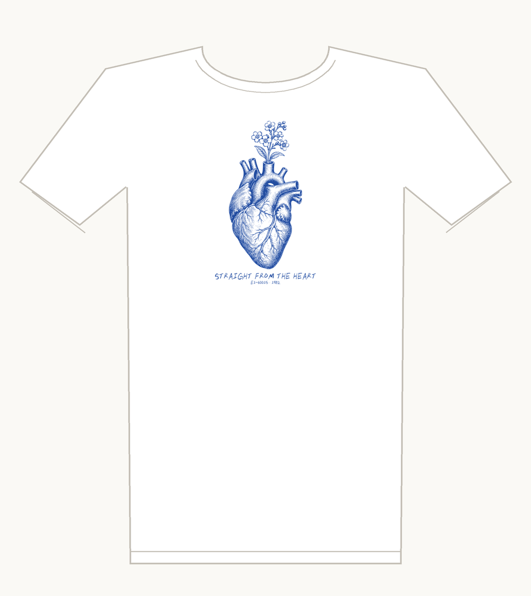

Straight From The Heart tee
An anatomical heart with forget-me-nots growing out of it, because “Forget Me Nots” is the record’s big one.
White tee, cobalt ink, one color · Bella+Canvas 3001 · S to 2XL
Printed on the front: STRAIGHT FROM THE HEART, E1-60015 · 1982
Buy $32
Shipping is $5, US only. Each shirt is printed when you order it and ships in about a week. Questions: reate.records.stardust299@slmail.me.
The record
Patrice Rushen – Straight From The Heart
Elektra E1-60015 · 1982 · on Discogs
I’ve played it 264 times on Spotify.
Play the record
Recorded at Conway Recording in Hollywood. Rushen produced it with Charles Mims Jr., arranged it, and plays the electric piano, synths and clavinet.
The bassline on “Forget Me Nots” is Freddie Washington, who wrote the song with Rushen and Terri McFaddin. George Michael interpolated it in “Fastlove” (1996), and Will Smith built “Men in Black” (1997) on it.
Two Grammy nominations from one record, in 1983: Best Female R&B Vocal Performance for “Forget Me Nots”, and Best R&B Instrumental Performance for “Number One”.
The band: Melvin Webb, James Gadson, Ollie Brown and Tony St. James on drums, Paul Jackson Jr. on guitar, Gerald Albright on sax, Paulinho Da Costa on percussion.
A fan’s tribute to the record, not official merchandise of the artist or label.